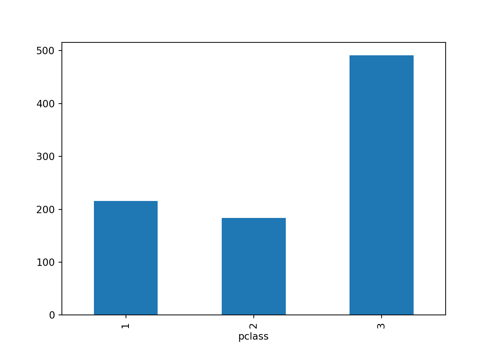

Grouping and aggregating data
See how group by can make data analysis efficient

Parnian Jahangiri rad
Parnian Jahangiri rad
Instructions:
In this Dotto,we are using titanic dataset that can be downloaded from here . This dataset contains 891 rows and 12 columns.
In this Dotto,we are using titanic dataset that can be downloaded from here . This dataset contains 891 rows and 12 columns.
Codes:
library(dplyr)
library(janitor)
library(kableExtra)
raw_titanic <- read.csv("/home/parnian/Documents/sprintt4/titanic_train.csv")
titanic_data <- raw_titanic %>%
clean_names()import pandas as pd
import janitor
raw_titanic = pd.read_csv("/home/parnian/Documents/sprintt4/titanic_train.csv")
titanic_data = raw_titanic.clean_names()
titanic_data.head(5)Results:
| passenger_id | survived | pclass | name | sex | age | sib_sp | parch | ticket | fare | cabin | embarked |
|---|---|---|---|---|---|---|---|---|---|---|---|
| 1 | 0 | 3 | Braund, Mr. Owen Harris | male | 22 | 1 | 0 | A/5 21171 | 7.2500 | S | |
| 2 | 1 | 1 | Cumings, Mrs. John Bradley (Florence Briggs Thayer) | female | 38 | 1 | 0 | PC 17599 | 71.2833 | C85 | C |
| 3 | 1 | 3 | Heikkinen, Miss. Laina | female | 26 | 0 | 0 | STON/O2. 3101282 | 7.9250 | S | |
| 4 | 1 | 1 | Futrelle, Mrs. Jacques Heath (Lily May Peel) | female | 35 | 1 | 0 | 113803 | 53.1000 | C123 | S |
| 5 | 0 | 3 | Allen, Mr. William Henry | male | 35 | 0 | 0 | 373450 | 8.0500 | S |
## passengerid survived pclass ... fare cabin embarked
## 0 1 0 3 ... 7.2500 NaN S
## 1 2 1 1 ... 71.2833 C85 C
## 2 3 1 3 ... 7.9250 NaN S
## 3 4 1 1 ... 53.1000 C123 S
## 4 5 0 3 ... 8.0500 NaN S
##
## [5 rows x 12 columns]Instructions:
group_by()is a function of dplyr package that creates a “grouped” copy of a table.
dplyr functions will manipulate each “group” separately and then , they will combine the results.
We can get group by categories using group_vars() function , and we can also get size of each group using group_size() function.
We can also group data by multiple categories.
groupby() is a function from pandas library that groups rows of data frame by some categories.
For example, titanic_data.group_by('sex') means that we want to analyze our data by different sex values.
The groupby() function returns a DataFrameGroupBy object.
There are some methods and attributes that makes it possible to access groups information:
- We can use ngroups attribute to get number of groups.
- We can use size() method to get group sizes.
- We can use get_group() method to retrieve groups.
If we pass a list of labels to groupby() function , we will group our data by multiple categories.
Codes:
group_by_sex <- titanic_data %>%
group_by(sex)
group_vars(group_by_sex)
group_size(group_by_sex)
multiple_group_by <- titanic_data %>%
group_by(sex,pclass)data_groupby_sex = titanic_data.groupby('sex')
type(data_groupby_sex)
data_groupby_sex.ngroups
data_groupby_sex.size()
female_data = data_groupby_sex.get_group('female')
female_data[["sex" , "age"]].head(5)
#group by multiple categories:
subset_data = titanic_data[["pclass" , "sex" , "fare"]]
multiple_groupby = subset_data.groupby(['sex' , 'pclass'])
multiple_groupby.head(3)Results:
## [1] "sex"## [1] 314 577| passenger_id | survived | pclass | name | sex | age | sib_sp | parch | ticket | fare | cabin | embarked |
|---|---|---|---|---|---|---|---|---|---|---|---|
| 1 | 0 | 3 | Braund, Mr. Owen Harris | male | 22 | 1 | 0 | A/5 21171 | 7.2500 | S | |
| 2 | 1 | 1 | Cumings, Mrs. John Bradley (Florence Briggs Thayer) | female | 38 | 1 | 0 | PC 17599 | 71.2833 | C85 | C |
| 3 | 1 | 3 | Heikkinen, Miss. Laina | female | 26 | 0 | 0 | STON/O2. 3101282 | 7.9250 | S | |
| 4 | 1 | 1 | Futrelle, Mrs. Jacques Heath (Lily May Peel) | female | 35 | 1 | 0 | 113803 | 53.1000 | C123 | S |
| 5 | 0 | 3 | Allen, Mr. William Henry | male | 35 | 0 | 0 | 373450 | 8.0500 | S |
## pandas.core.groupby.generic.DataFrameGroupBy## 2## sex
## female 314
## male 577
## dtype: int64## sex age
## 1 female 38.0
## 2 female 26.0
## 3 female 35.0
## 8 female 27.0
## 9 female 14.0## pclass sex fare
## 0 3 male 7.2500
## 1 1 female 71.2833
## 2 3 female 7.9250
## 3 1 female 53.1000
## 4 3 male 8.0500
## 5 3 male 8.4583
## 6 1 male 51.8625
## 8 3 female 11.1333
## 9 2 female 30.0708
## 10 3 female 16.7000
## 11 1 female 26.5500
## 15 2 female 16.0000
## 17 2 male 13.0000
## 20 2 male 26.0000
## 21 2 male 13.0000
## 23 1 male 35.5000
## 27 1 male 263.0000
## 41 2 female 21.0000Instructions:
Aggregation functions are used to summarize information from multiple rows into a single row summary.
summarise() function from dplyr, applies summary functions to columns to create a new table.
So , once we created groups using groupby() function, we can create statistical summary for each group using summarise() and aggregation functions.
These are some useful summary functions in dplyr:
- n() : numbers of rows
- n_distinct() : This is a faster and more concise equivalent of length(unique(x)).
- min() : compute min of group values.
- max() : compute max of group values.
- mean() : compute mean of groups.
- sum() : compute sum of group values.
For more information , please visit here.
Aggregation functions are used to summarize information from multiple rows into a single row summary.
So , once we created groups using groupby() function, we can create statistical summary for each group using aggregation functions. This is the list of some of important aggregation functions in pandas:
-mean() : compute mean of groups.
- sum() : compute sum of group values.
- count() : compute count of groups.
- size() : compute group sizes.
- min() : compute min of group values.
- max() : compute max of group values. - describe() : generates descriptive statistics. For more information,please visit here.
Codes:
groups_count <- data_group_by_sex %>%
summarise(size = n() )titanic_data.groupby("sex").describe()Results:
| sex | size |
|---|---|
| female | 314 |
| male | 577 |
## passengerid ... fare
## count mean std ... 50% 75% max
## sex ...
## female 314.0 431.028662 256.846324 ... 23.0 55.00 512.3292
## male 577.0 454.147314 257.486139 ... 10.5 26.55 512.3292
##
## [2 rows x 56 columns]Instructions:
We can use summarise_all() , summarise_at() and summarise_if() functions from dplyr package to summarise multiple columns at once:
summarise_all()affects every variable.
summarise_at()affects variables selected with a character vector or vars().
summarise_if()affects variables selected with a predicate function.
syntax :
summarise_all(.tbl, .funs, …)
summarise_at(.tbl, .vars, .funs, …, .cols = NULL)
summarize_if(.tbl, .predicate, .funs, …)
Arguments :
.tbl : A tbl object.
.funs : A function fun, a quosure style lambda ~ fun(.) or a list of either form.
.predicate : A predicate function to be applied to the columns or a logical vector. The variables for which .predicate is or returns TRUE are selected. This argument is passed to rlang::as_function() and thus supports quosure-style lambda functions and strings representing function names.
vars : A list of columns generated by vars(), a character vector of column names, a numeric vector of column positions, or NULL.
.cols : This argument has been renamed to .vars to fit dplyr’s terminology and is deprecated.
Please visit here for more information.
Using agg() method , we can apply multiple aggregation functions at once. Without specifying column(s) , agg will perform aggregation functions on every numeric column.
We can also use Different aggregate functions on different columns.
Codes:
multiple_aggregation_1 <- titanic_data %>%
select(pclass ,
sex ,
age ,
fare ,
cabin) %>%
filter( !is.na(age) & !age == "" & !is.na(fare) & !fare == "" ) %>%
group_by(sex) %>%
summarise_if(.predicate = function(x) is.numeric(x),
.funs = list(min="min" , max = "max"))
multiple_aggregation_2 <- titanic_data %>%
select(pclass ,
sex ,
age ,
fare ,
cabin) %>%
filter( !is.na(age) & !is.na(fare) ) %>%
group_by(sex,pclass) %>%
summarise(min_age = min(age) , max_age = max(age) , max_fare = max(fare))selected_columns = titanic_data[["pclass" ,"sex" , "age" , "fare" , "cabin" ]]
#using "agg" without specifying columns
selected_columns.groupby('sex').agg(['min','max'])
#apply different aggs on columns with dictionary:
selected_columns.groupby(["sex" , "pclass"]).agg({"age" : ["min" , "max"] , "fare" : "max"})Results:
| sex | pclass_min | age_min | fare_min | pclass_max | age_max | fare_max |
|---|---|---|---|---|---|---|
| female | 1 | 0.75 | 6.75 | 3 | 63 | 512.3292 |
| male | 1 | 0.42 | 0.00 | 3 | 80 | 512.3292 |
| sex | pclass | min_age | max_age | max_fare |
|---|---|---|---|---|
| female | 1 | 2.00 | 63 | 512.3292 |
| female | 2 | 2.00 | 57 | 65.0000 |
| female | 3 | 0.75 | 63 | 46.9000 |
| male | 1 | 0.92 | 80 | 512.3292 |
| male | 2 | 0.67 | 70 | 73.5000 |
| male | 3 | 0.42 | 74 | 56.4958 |
## pclass age fare
## min max min max min max
## sex
## female 1 3 0.75 63.0 6.75 512.3292
## male 1 3 0.42 80.0 0.00 512.3292## age fare
## min max max
## sex pclass
## female 1 2.00 63.0 512.3292
## 2 2.00 57.0 65.0000
## 3 0.75 63.0 69.5500
## male 1 0.92 80.0 512.3292
## 2 0.67 70.0 73.5000
## 3 0.42 74.0 69.5500Instructions:
We can apply functions and formulas to groups with group_by() and summarise().
Suppose that we want to get number of passengers in each pclass.
apply() from pandas is used to apply a function along an axis of the data frame.
In this dot , we want to see that how many passengers have pclass equal to 3.
Introducing lambda function :
A lambda function is a small anonymous function (has no name when defining it) ,and it can take any number of arguments, but can only have one expression.
syntax:
lambda arguments : expression
lambda function is usually used just once , and it can make your code shorter (because it is contained in one line of code).
The power of lambda is better shown when you use them as an anonymous function inside another function.
For more information about lambda function , please visit here.
Codes:
num_each_pclass <- titanic_data %>%
group_by(pclass) %>%
summarise(num = n())titanic_data.groupby(titanic_data['pclass'].apply(lambda x : x == 3)).size()Results:
| pclass | num |
|---|---|
| 1 | 216 |
| 2 | 184 |
| 3 | 491 |
## pclass
## False 400
## True 491
## dtype: int64Instructions:
We can add new columns to our data frame using mutate() function from dplyr package.
combination of group_by() and mutate() makes it possible to transform data frame.
In this dot, we want to have a new column that shows difference of each passenger’s fare from the mean fare.
transform() is a useful function from pandas library that helps us to manipulate rows or columns.
One of the most common usages of transform() function is combining group by results.
Suppose that we want to have a new column that shows difference of each passenger’s fare from the mean fare.
We can do this using groupby() and transform().
Codes:
transformed_data <- titanic_data %>%
group_by(sex) %>%
mutate(distance_from_mean = fare - mean(fare))titanic_data['distance_from_mean'] = titanic_data.groupby('sex')['fare'].transform(lambda x: x - x.mean())Results:
| passenger_id | survived | pclass | name | sex | age | sib_sp | parch | ticket | fare | cabin | embarked | distance_from_mean |
|---|---|---|---|---|---|---|---|---|---|---|---|---|
| 1 | 0 | 3 | Braund, Mr. Owen Harris | male | 22 | 1 | 0 | A/5 21171 | 7.2500 | S | -18.273893 | |
| 2 | 1 | 1 | Cumings, Mrs. John Bradley (Florence Briggs Thayer) | female | 38 | 1 | 0 | PC 17599 | 71.2833 | C85 | C | 26.803482 |
| 3 | 1 | 3 | Heikkinen, Miss. Laina | female | 26 | 0 | 0 | STON/O2. 3101282 | 7.9250 | S | -36.554818 | |
| 4 | 1 | 1 | Futrelle, Mrs. Jacques Heath (Lily May Peel) | female | 35 | 1 | 0 | 113803 | 53.1000 | C123 | S | 8.620182 |
| 5 | 0 | 3 | Allen, Mr. William Henry | male | 35 | 0 | 0 | 373450 | 8.0500 | S | -17.473893 |
## passengerid survived pclass ... cabin embarked distance_from_mean
## 0 1 0 3 ... NaN S -18.273893
## 1 2 1 1 ... C85 C 26.803482
## 2 3 1 3 ... NaN S -36.554818
## 3 4 1 1 ... C123 S 8.620182
## 4 5 0 3 ... NaN S -17.473893
##
## [5 rows x 13 columns]Instructions:
We can filter some of our groups based on conditions.
Let’s filter data to find all passengers that lives in cabin with more than 3 people.
(We filter missing values before grouping because group by considers rows with missing value of cabin as one group).
We can filter some of our groups based on conditions.
Let’s filter data to find all passengers that lives in cabin with more than 3 people.
Codes:
more_than_3 <- titanic_data %>%
filter(!is.na(cabin) & !cabin == "") %>%
group_by(cabin) %>%
mutate(num_of_people = n()) %>%
filter(num_of_people > 3)titanic_data.groupby('cabin').filter(lambda x : len(x) > 3)Results:
| passenger_id | survived | pclass | name | sex | age | sib_sp | parch | ticket | fare | cabin | embarked | num_of_people |
|---|---|---|---|---|---|---|---|---|---|---|---|---|
| 11 | 1 | 3 | Sandstrom, Miss. Marguerite Rut | female | 4 | 1 | 1 | PP 9549 | 16.7000 | G6 | S | 4 |
| 28 | 0 | 1 | Fortune, Mr. Charles Alexander | male | 19 | 3 | 2 | 19950 | 263.0000 | C23 C25 C27 | S | 4 |
| 89 | 1 | 1 | Fortune, Miss. Mabel Helen | female | 23 | 3 | 2 | 19950 | 263.0000 | C23 C25 C27 | S | 4 |
| 206 | 0 | 3 | Strom, Miss. Telma Matilda | female | 2 | 0 | 1 | 347054 | 10.4625 | G6 | S | 4 |
| 252 | 0 | 3 | Strom, Mrs. Wilhelm (Elna Matilda Persson) | female | 29 | 1 | 1 | 347054 | 10.4625 | G6 | S | 4 |
| 342 | 1 | 1 | Fortune, Miss. Alice Elizabeth | female | 24 | 3 | 2 | 19950 | 263.0000 | C23 C25 C27 | S | 4 |
| 391 | 1 | 1 | Carter, Mr. William Ernest | male | 36 | 1 | 2 | 113760 | 120.0000 | B96 B98 | S | 4 |
| 395 | 1 | 3 | Sandstrom, Mrs. Hjalmar (Agnes Charlotta Bengtsson) | female | 24 | 0 | 2 | PP 9549 | 16.7000 | G6 | S | 4 |
| 436 | 1 | 1 | Carter, Miss. Lucile Polk | female | 14 | 1 | 2 | 113760 | 120.0000 | B96 B98 | S | 4 |
| 439 | 0 | 1 | Fortune, Mr. Mark | male | 64 | 1 | 4 | 19950 | 263.0000 | C23 C25 C27 | S | 4 |
| 764 | 1 | 1 | Carter, Mrs. William Ernest (Lucile Polk) | female | 36 | 1 | 2 | 113760 | 120.0000 | B96 B98 | S | 4 |
| 803 | 1 | 1 | Carter, Master. William Thornton II | male | 11 | 1 | 2 | 113760 | 120.0000 | B96 B98 | S | 4 |
## passengerid survived pclass ... cabin embarked distance_from_mean
## 10 11 1 3 ... G6 S -27.779818
## 27 28 0 1 ... C23 C25 C27 S 237.476107
## 88 89 1 1 ... C23 C25 C27 S 218.520182
## 205 206 0 3 ... G6 S -34.017318
## 251 252 0 3 ... G6 S -34.017318
## 341 342 1 1 ... C23 C25 C27 S 218.520182
## 390 391 1 1 ... B96 B98 S 94.476107
## 394 395 1 3 ... G6 S -27.779818
## 435 436 1 1 ... B96 B98 S 75.520182
## 438 439 0 1 ... C23 C25 C27 S 237.476107
## 763 764 1 1 ... B96 B98 S 75.520182
## 802 803 1 1 ... B96 B98 S 94.476107
##
## [12 rows x 13 columns]Instructions:
We can visualized our grouped data using ggplot2 package.
We can visualized our grouped data using matplotlib package.
Codes:
library(ggplot2)
group_by_pclass <- titanic_data %>%
group_by(pclass) %>%
summarise(size = n())
ggplot(group_by_pclass ,
aes(x = pclass,
y = size)) +
geom_bar(stat = "identity" ,
fill = "darkmagenta")import matplotlib.pyplot as plt
titanic_data.groupby('pclass').size().plot(kind = 'bar')Results:

